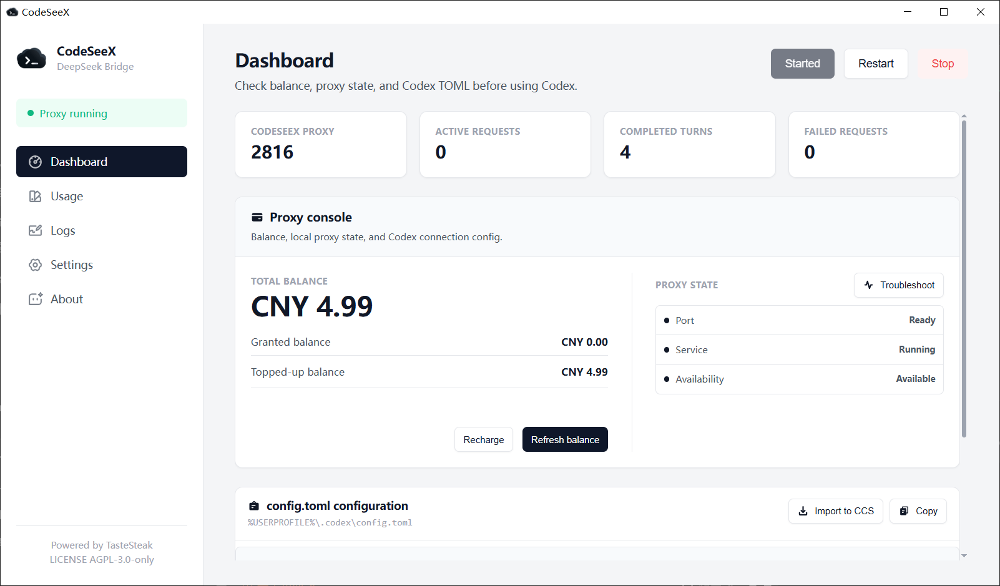

Tool lifecycle
Codex-native Apply Patch, hosted tools, deferred discovery, and bounded tool result replay.
Run DeepSeek-compatible models through a local /v1 adapter that understands Codex tool handoffs, context replay, usage sessions, web search, diagnostics, and desktop operations.

Forwarding HTTP bodies is the easy part. CodeSeeX adds the agent runtime layer needed for long Codex sessions, tools, large repositories, service requests, and explainable usage.
The desktop app is the control plane; the proxy is the execution boundary.
Codex-native Apply Patch, hosted tools, deferred discovery, and bounded tool result replay.
Full-context detection, compact summaries, binary redaction, and verified tool facts.
Conversation-level cost, latency, cache hits, service requests, and model phases.
Request, protocol, context, web search, and network events without default prompt exposure.
Source health, fallback ordering, automatic evidence opening, and private target protection.
Optional image analysis and generation through configured OpenAI-compatible endpoints.
Usage, logs, tools, generated TOML, Codex sessions, and Vision are first-class product surfaces.


CodeSeeX keeps Codex semantics visible while letting DeepSeek-compatible upstreams power the model work.
Start with the generated TOML, keep the manager open for observability, and use the docs when you need to reason about tools, state, or privacy.